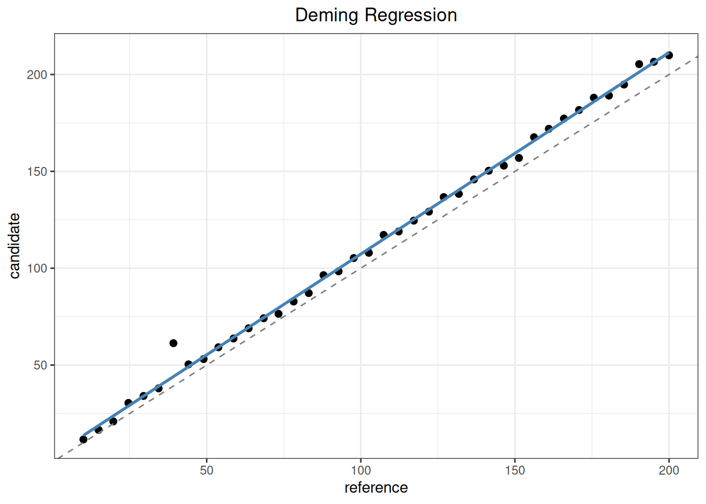
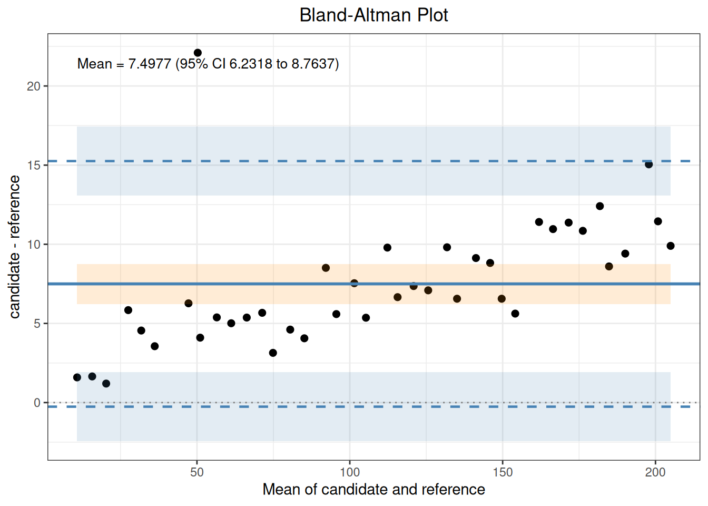
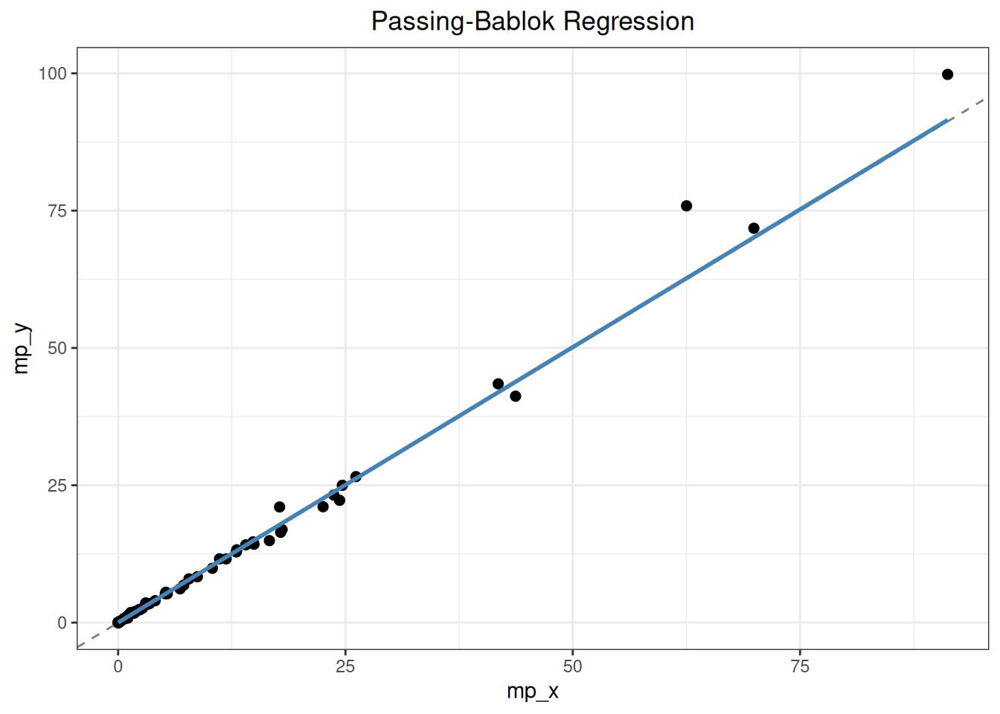
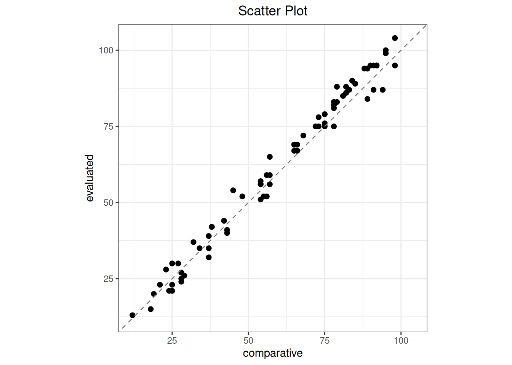
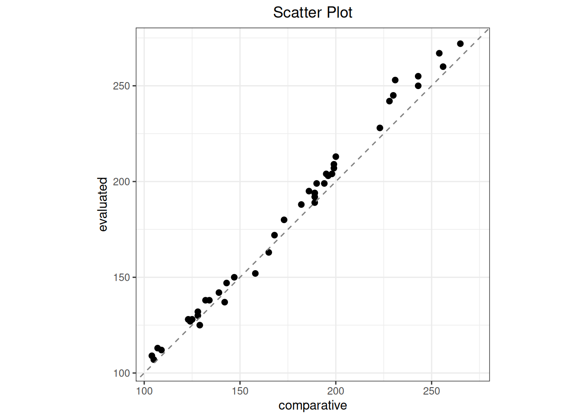

Code
library(ivdtools)
library(readr)Method comparison evaluates agreement between candidate and reference procedures on the same samples, corresponding to CLSI EP09. Reference-material bias asks a related but distinct question: how far are repeated measurements of a reference material from its assigned value, including uncertainty in the assigned value?
| Analysis path | Main input | Main result |
|---|---|---|
| Patient-sample method comparison | Sample ID, comparison and candidate results, optional weights | Difference, regression, agreement limits, outliers, bias at specified levels |
| Reference-material bias | Replicates, assigned value, and assigned-value uncertainty | Mean, bias, relative bias, and bias interval |
Correlation is not agreement, and a statistically significant bias is not automatically clinically important. Choose the regression and error model before seeing results, preserve the candidate-minus-reference direction, and compare bias and agreement limits with prespecified allowable limits at relevant decision levels.
library(ivdtools)
library(readr)| Function | Purpose | Return value |
|---|---|---|
| replicate_to_mean() | Summarize one or more response columns by sample with mean, SD, and n | Summary data frame |
| split_by_cutpoints() | Split analysis data at prespecified numeric boundaries | Named data-frame list |
| mcr() | Create a method-comparison object | mcr object |
| describe() | Add descriptive statistics | Updated mcr object |
| correlation() | Add correlation analysis | Updated mcr object |
| regression() | Fit OLS, WLS, Deming, weighted Deming, or Passing–Bablok regression | Updated mcr object |
| bland_altman() | Estimate center difference, center interval, and limits of agreement | Updated mcr object |
| outlier() | Test paired-difference outliers | Updated mcr object |
| bias() | Calculate bias at specified levels | Updated mcr object |
| predict() | Forward or inverse prediction | Prediction data frame |
| reference_bias() | Analyze reference-material bias and intervals | reference_bias object |
| plot() | Plot scatter, regression, agreement, or bias | ggplot object |
| summary() | Summarize completed analyses | Original mcr object, invisibly |
replicate_to_mean(data, x, y, weights = NULL, na.rm = TRUE)
summary_data <- replicate_to_mean(
raw_data, "sample", c("candidate", "reference")
)x is the sample-ID column and y can contain one or more numeric result columns. With one column, the function returns x, y_mean, y_sd, and y_n to preserve the original interface. With multiple columns it returns one set of mean, SD, and n columns per variable. The multiple-column mode does not create one common weight because each method has its own precision information.
Segmentation is data preparation and is not stored in an mcr object. One mcr object always represents one defined data set, so descriptive statistics, correlation, outlier testing, regression, Bland–Altman analysis, bias, and plots use the same sample range.
mcr_data_list <- split_by_cutpoints(
method_data,
variable = "reference",
cutpoints = c(100, 500)
)
mcr_data_listThe console summary has the following form:
Data split by cutpoints
Variable: reference
Cutpoints: 100, 500
segment_1 [-Inf, 100) n = 35
segment_2 [100, 500) n = 62
segment_3 [500, Inf) n = 28The return value is a named data-frame list; each segment retains all original columns and row order:
mcr_data_list$segment_1
mcr_data_list$segment_2
mcr_data_list$segment_3Use lapply() to create comparison objects for each segment and then run the complete workflow:
mcr_results <- lapply(
mcr_data_list,
function(d) mcr(
d,
id = "sample",
candidate = "candidate",
reference = "reference"
)
)
mcr_results$segment_1 |>
describe() |>
correlation() |>
regression(method = "deming") |>
bland_altman()cutpoints must be finite, strictly increasing, and unique. Intervals are left-closed and right-open, so a cutpoint belongs to the next segment. Empty segments are retained by default to reveal prespecified ranges with no observations; drop_empty = TRUE removes them. Nonfinite segmentation values error by default; na_action = “drop” excludes them and records the count. labels can provide unique list names.
mcr(
data,
id,
candidate,
reference,
weights = NULL,
candidate_sd = NULL,
reference_sd = NULL,
candidate_n = NULL,
reference_n = NULL
)data must contain one pair of sample-level means per row; duplicate IDs error. id is the sample-ID column. candidate is the evaluated procedure, the regression Y axis, and the first term in the difference. reference is the comparison procedure, the regression X axis, and the second term. weights is an optional finite nonnegative weight column. candidate_sd and reference_sd are optional within-sample SD columns and must be supplied together for lambda = “replicates”. candidate_n and reference_n are optional replicate-count columns and must also be supplied together; if omitted, equal replicate counts are assumed.
The returned mcr object preserves the input data and column names, complete paired values, the input row numbers in complete_idx, and the number of complete pairs n. Later results are stored in describe, correlation, regression, outlier, bland_altman, and bias slots. Split first with split_by_cutpoints() when separate ranges are required.
describe(x, cols = NULL, digits = 4L)x is an mcr object. cols selects additional columns; when omitted, all columns other than ID and the two measurement columns are used, and a minus-prefixed name can exclude a column. digits controls display precision.
The returned object contains complete-pair count, duplicate-ID information, summaries of additional columns, and descriptive statistics for the candidate, reference, and paired difference.
correlation(
x,
method = c("pearson", "spearman", "kendall")
)method selects Pearson, Spearman, or Kendall. The correlation slot contains coefficient, test statistic, degrees of freedom, P value, interval, and n. Correlation describes common variation and is not agreement.
regression(
x,
method = c("ols", "wls", "deming", "wdeming", "pb"),
conf.level = 0.95,
lambda = 1,
weights = NULL,
variance_models = NULL,
profile_components = c(reference = "total", candidate = "total"),
ci_method = c(
"auto", "analytic", "jackknife", "rank",
"bootstrap_percentile", "bootstrap_standard"
),
bootstrap_replicates = 5000L,
seed = NULL,
mdl = NULL,
weight_iterations = 4L,
epsilon = NULL
)method selects ols, wls, deming, wdeming, or pb. conf.level is the regression-parameter confidence level. lambda is candidate-Y variance divided by reference-X variance, as a positive number or “replicates”; the latter uses SD and n supplied to mcr(). weights supports fixed weights, residual, constant_cv, and precision_profile. For precision_profile, variance_models is a list with reference and candidate functions or precision objects that have already been profiled, and profile_components selects the component on each side.
ci_method = “auto” uses analytic intervals for OLS/WLS, complete-refit jackknife for Deming variants, and rank intervals for Passing–Bablok. The explicit bootstrap methods are the K2 percentile and standard methods. At least 5,000 bootstrap replicates are required. seed controls reproducibility without changing the caller’s random-number state. mdl supplies medical decision levels; when bootstrap is run during regression, bias draws for those levels are retained. weight_iterations controls residual-weight updates, and epsilon controls convergence in iterative weighted Deming.
The returned regression slot stores method, intercept, slope, SEs, parameter intervals, intercept–slope covariance, residuals, regression SE, n, input row numbers, confidence level, and, when applicable, R-squared, variance ratio, and weight specification. Iterative weighted Deming also stores convergence, latent concentrations, and final weights. Bootstrap stores the seed, requested/valid/failed counts, and parameter draws. Passing–Bablok follows EP09c Appendix I Algorithm I for vertical pairs, slope -1, and K shifts.
bland_altman(
x,
type = c("difference", "ratio", "percent"),
x_axis = c("mean", "candidate", "reference"),
percent_denominator = c("reference", "mean", "candidate"),
agree.level = 0.95,
conf.level = 0.95,
method = c("parametric", "nonparametric", "hodges_lehmann"),
median_ci_method = c("order_statistic", "interpolated"),
bootstrap_replicates = 5000L,
seed = NULL
)type selects absolute difference, ratio, or percentage difference. x_axis uses the two-method mean, candidate, or reference as horizontal coordinate. percent_denominator independently selects reference, mean, or candidate. agree.level is the LoA coverage proportion, while conf.level is confidence in the center and LoA intervals. The parametric method uses the mean difference, nonparametric uses the ordinary median, and hodges_lehmann uses the HL pseudomedian. median_ci_method selects the conservative order-statistic interval or Appendix F continuous-rank interpolation. bootstrap_replicates and seed control nonparametric LoA resampling.
The bland_altman slot contains center value, center_estimand, center_ci, method-specific center interval, SD, LoA and their intervals, percent denominator, source row numbers, plotting coordinate, and labels. Order-statistic intervals record actual coverage; interpolated intervals record continuous rank and nominal coverage.
outlier(
x,
method = c("grubbs", "esd", "dixon", "iqr"),
type = c("difference", "percent"),
percent_denominator = c("reference", "mean", "candidate"),
alpha = 0.05,
coef = 1.5,
...
)method selects Grubbs, generalized ESD, Dixon, or IQR. type tests absolute or percent differences, and percent_denominator uses the same definition as bland_altman(). alpha controls the Grubbs, ESD, or Dixon tests; coef controls IQR fences. Additional arguments are passed to the selected test, including r for the maximum number of generalized-ESD candidates.
The returned outlier slot stores method, difference scale, number of outliers, input row numbers, values, test statistics, and critical values. Detection does not authorize deletion.
bias(
x,
mdl,
level = 0.95,
interval = c("", "confidence", "prediction", "both"),
ci_method = c("auto", "analytic", "jackknife", "rank",
"bootstrap_percentile", "bootstrap_standard"),
bootstrap_replicates = 5000L,
seed = NULL
)x must be an mcr object with regression completed. mdl contains one or more reference-scale levels. interval selects confidence, prediction, or both; level is the bias-interval confidence level. ci_method, bootstrap_replicates, and seed control parameter uncertainty. Passing–Bablok under auto uses percentile bootstrap, not jackknife.
The returned bias slot defines bias as fitted candidate minus mdl. After prespecified data segmentation, mdl should lie within that segment to avoid accidental extrapolation.
predict(
object,
newdata = NULL,
reference = NULL,
candidate = NULL,
inverse = FALSE,
interval = c("none", "confidence", "prediction", "both"),
conf.level = 0.95,
ci_method = c("auto", "analytic", "jackknife", "rank",
"bootstrap_percentile", "bootstrap_standard"),
bootstrap_replicates = 5000L,
seed = NULL
)With inverse = FALSE, predict candidate from reference; with inverse = TRUE, algebraically solve for reference from candidate. newdata supplies new values; otherwise the original reference or candidate column is used. The function returns input, predicted value, and requested intervals. Prediction intervals are an ivdtools extension and do not represent EP09c parameter intervals. Inverse prediction is an algebraic back-calculation and does not return an interval.
reference_bias(
data,
result,
reference,
reference_uncertainty,
level = NULL,
k = 2
)data is long-format replicate data. result is the measurement column. reference is a single assigned value, a vector with one value per level, or a column. reference_uncertainty follows the same rules. level optionally identifies material/concentration strata; assignment and uncertainty must be constant within each stratum. k expands the standard uncertainty of the measurement mean into an interval component and defaults to 2.
The returned reference_bias object contains, for each level, total and valid counts, excluded count, mean, SD, standard and expanded uncertainty of the mean, assigned value and its uncertainty, absolute and relative bias, half-width, and interval limits. It also records the input columns, k, and counts.
plot(
x,
type = c("scatter", "regression", "bland_altman", "bias"),
interval = c("none", "confidence", "prediction", "both"),
conf.level = NULL,
mdl = NULL
)type selects scatter, regression, Bland–Altman, or bias plots. interval and conf.level control regression/bias bands; mdl marks medical decision levels. The function invisibly returns a ggplot object. Plots use the same data range as their corresponding analysis slots.
summary(object)summary prints analyses already completed in the mcr object, does not run missing steps, and invisibly returns the original object.
| Function | Purpose | Return value |
|---|---|---|
replicate_to_mean() |
Summarize one or more response columns by sample | Summary data frame |
split_by_cutpoints() |
Split data at prespecified numerical boundaries | Named data-frame list |
mcr() |
Create a method-comparison object | mcr object |
describe() |
Add descriptive statistics | Updated object |
correlation() |
Add Pearson, Spearman, or Kendall correlation | Updated object |
regression() |
Fit OLS, WLS, Deming, weighted Deming, or Passing–Bablok | Updated object |
bland_altman() |
Estimate center difference and limits of agreement | Updated object |
outlier() |
Test paired-difference outliers | Updated object |
bias() |
Estimate bias at medical decision levels | Updated object |
predict() |
Forward or inverse prediction | Prediction data frame |
reference_bias() |
Analyze reference-material bias and intervals | reference_bias object |
plot() / summary() |
Plot and summarize completed analyses | Figure or updated object |
replicate_to_mean(data, x = "sample", y = c("candidate", "reference"))
split_by_cutpoints(data, col = "reference", cutpoints = c(30, 80, 150))The resulting data frame should contain one row per sample and one paired mean for each method. Define cutpoints before analysis and do not repeatedly split to find favorable results.
mcr(data, id, candidate, reference, weights = NULL,
candidate_sd = NULL, reference_sd = NULL,
candidate_n = NULL, reference_n = NULL)Each row must be one sample-level pair; duplicate IDs are errors. The candidate is the regression Y axis and the first term in candidate-minus-reference differences; the reference is the X axis. Sample-level SD and replicate count columns can support lambda="replicates".
regression(
x, method = c("ols", "wls", "deming", "wdeming", "pb"),
conf.level = 0.95, lambda = 1,
weights = NULL, variance_models = NULL,
profile_components = c("total"), ci_method = "auto",
bootstrap_replicates = 5000, seed = NULL, mdl = NULL
)OLS treats X error as negligible; Deming accounts for error in both methods; WLS and weighted Deming address concentration-dependent variance; Passing–Bablok uses rank-based slopes without a normal-error model. lambda is the candidate/reference variance ratio and should come from independent precision evidence, not be tuned to match a desired slope. ci_method="auto" uses analytic intervals for OLS/WLS, jackknife for Deming variants, and rank intervals for Passing–Bablok.
bland_altman(x, type = c("difference", "ratio", "percent"),
x_axis = c("mean", "candidate", "reference"))
outlier(x, method = c("grubbs", "esd", "dixon", "iqr"), type = "difference")
bias(x, mdl = c(30, 80, 150), interval = "both")
predict(x, candidate = c(40, 100))
predict(x, reference = c(50, 120), inverse = TRUE)The Bland–Altman center and limits of agreement describe individual differences, not a test of equality of means. Investigate candidate outliers in the original records and report sensitivity analyses; detection does not authorize automatic deletion.
reference_bias(
data,
result,
reference,
reference_uncertainty,
level = NULL,
k = 2
)The function combines the expanded uncertainty of the measured mean with the reference-material uncertainty. It reports results only; state the bias direction and the coverage factor before interpreting the interval.
mc_dat <- as.data.frame(read_csv(
"./data/009-方法学比较与参考物偏倚/method-comparison.csv",
show_col_types = FALSE
))
mc <- mcr(mc_dat, id = "id", candidate = "candidate", reference = "reference")
mc <- describe(mc)
Descriptive Statistics
Variable n Mean SD Min Q1 Median Q3 Max NA
---------------------------------------------------------------------------
reference (X) 40 105.0000 56.9555 10.0000 57.4750 105.0000 152.5250 200.0000
candidate (Y) 40 112.4977 59.2513 11.5900 63.1075 112.5750 159.5925 209.9000
Diff (Y-X) 40 7.4977 3.9583 1.2000 5.2725 6.6100 9.7950 22.1000
batch
Level Count Percent
--------------------------------------
B1 20 50.0%
B2 20 50.0%
sample_type
Level Count Percent
--------------------------------------
plasma 13 32.5%
serum 14 35.0%
urine 13 32.5%mc <- correlation(mc, method = "pearson")
Correlation
Method: pearson
r = 0.9985, 95% CI [0.9971, 0.9992]
p-value: < 2.2e-16
n = 40mc <- regression(mc, method = "deming")
Regression
Method: Deming
CI method: jackknife
Intercept = 3.2588 (SE = 1.4495)
Slope = 1.0404 (SE = 0.0100)
Intercept 95% CI: [0.3245, 6.1930]
Slope 95% CI: [1.0202, 1.0606]
H0: slope = 1 -> t = 4.0474, p = 0.0002453
slope significantly different from 1 (CI excludes 1)
Sigma = 3.3319
n = 40mc <- bland_altman(mc, type = "difference")
Bland-Altman
Type: difference
Y-axis: candidate - reference
X-axis: Mean of candidate and reference
Method: parametric
n = 40
Mean diff: 7.4977
95% CI for mean diff: [6.2318, 8.7637]
SD diff: 3.9583
95% LoA: [-0.2603, 15.2558]
95% CI for LoA:
Lower LoA: [-2.4419, 1.9213]
Upper LoA: [13.0742, 17.4374]mc <- outlier(mc, method = "grubbs", type = "difference")
Outlier
Method: grubbs
Data: Difference (candidate - reference)
Alpha: 0.05
1 outlier(s) found:
Row Value Statistic Critical
--------------------------------------------------
7 22.1000 3.6891 3.0361mc <- bias(mc, mdl = c(30, 80, 150), interval = "both")
Bias
Method: Deming
Interval: both (95%)
MDL points: 3
Bias range: [4.4699, 9.3145]
mdl bias ci_lower ci_upper pi_lower pi_upper
----------------------------------------------------
30 4.469895 2.109892 6.829897 -2.6761742 11.61596
80 6.488465 5.027934 7.948996 -0.4129728 13.38990
150 9.314463 8.450122 10.178804 2.5141854 16.11474 summary(mc)
Method Comparison Regression (mcr)
-----------------------------------------------------
Method Comparison
Data class: data.frame
Total rows: 40
Complete pairs: 40
ID variable: id
Reference (X): reference
Candidate (Y): candidate
Duplicate IDs: none
Analysis slots:
[x] Describe
[x] Correlation (pearson)
[x] Regression (Deming)
[x] Outlier (grubbs)
[x] Bland-Altman (difference)
[x] Bias
Descriptive Statistics
Variable n Mean SD Min Q1 Median Q3 Max NA
---------------------------------------------------------------------------
reference (X) 40 105.0000 56.9555 10.0000 57.4750 105.0000 152.5250 200.0000
candidate (Y) 40 112.4977 59.2513 11.5900 63.1075 112.5750 159.5925 209.9000
Diff (Y-X) 40 7.4977 3.9583 1.2000 5.2725 6.6100 9.7950 22.1000
batch
Level Count Percent
--------------------------------------
B1 20 50.0%
B2 20 50.0%
sample_type
Level Count Percent
--------------------------------------
plasma 13 32.5%
serum 14 35.0%
urine 13 32.5%
Correlation
Method: pearson
r = 0.9985, 95% CI [0.9971, 0.9992]
p-value: < 2.2e-16
n = 40
Regression
Method: Deming
CI method: jackknife
Intercept = 3.2588 (SE = 1.4495)
Slope = 1.0404 (SE = 0.0100)
Intercept 95% CI: [0.3245, 6.1930]
Slope 95% CI: [1.0202, 1.0606]
H0: slope = 1 -> t = 4.0474, p = 0.0002453
slope significantly different from 1 (CI excludes 1)
Sigma = 3.3319
n = 40
Outlier
Method: grubbs
Data: Difference (candidate - reference)
Alpha: 0.05
1 outlier(s) found:
Row Value Statistic Critical
--------------------------------------------------
7 22.1000 3.6891 3.0361
Bland-Altman
Type: difference
Y-axis: candidate - reference
X-axis: Mean of candidate and reference
Method: parametric
n = 40
Mean diff: 7.4977
95% CI for mean diff: [6.2318, 8.7637]
SD diff: 3.9583
95% LoA: [-0.2603, 15.2558]
95% CI for LoA:
Lower LoA: [-2.4419, 1.9213]
Upper LoA: [13.0742, 17.4374]
Bias
Method: Deming
Interval: both (95%)
MDL points: 3
Bias range: [4.4699, 9.3145]
mdl bias ci_lower ci_upper pi_lower pi_upper
----------------------------------------------------
30 4.469895 2.109892 6.829897 -2.6761742 11.61596
80 6.488465 5.027934 7.948996 -0.4129728 13.38990
150 9.314463 8.450122 10.178804 2.5141854 16.11474 plot(mc, type = "regression")
plot(mc, type = "bland_altman")
For subgroup analyses, split by lot or sample type using prespecified boundaries and repeat the same workflow on every subgroup. Do not let a pooled mean conceal subgroup-specific bias.
rm_data <- as.data.frame(read_csv(
"./data/009-方法学比较与参考物偏倚/std-wst408-reference-material.csv",
show_col_types = FALSE
))
rm_fit <- reference_bias(
rm_data,
result = "result",
reference = "assigned",
reference_uncertainty = "expanded_uncertainty",
level = "sample",
k = 2
)
print(rm_fit)
Reference Material Bias
Standard: YY/T 1789.2-2021, Section 5.3
Data: rm_data
Result: result
Levels: 2
Records: 20 valid, 0 excluded
Coverage factor: k = 2
Measurement and uncertainty
Level: GBW09193
n : 10
Mean : 1.528
SD : 0.016193277
Reference : 1.49
U_ref : 0.04
u_X : 0.0051207638
U_X : 0.010241528
Level: GBW09195
n : 10
Mean : 1.05
SD : 0.014142136
Reference : 1.02
U_ref : 0.04
u_X : 0.004472136
U_X : 0.0089442719
Bias interval
Level: GBW09193
Bias : 0.038
Bias (%) : 2.5503356
Interval half-width : 0.0412903
Lower : -0.0032903002
Upper : 0.0792903
Level: GBW09195
Bias : 0.03
Bias (%) : 2.9411765
Interval half-width : 0.040987803
Lower : -0.010987803
Upper : 0.070987803
Interval: Bias +/- sqrt(U_X^2 + U_ref^2)mcr() does not accept raw replicate rows with the same ID. First summarize both methods, then pass the mean columns as X/Y and the SD and n columns as replicate precision information. The two methods may have different replicate counts, but each count must be constant across samples; otherwise a single scalar lambda is not appropriate and a precision profile should be used.
replicate_raw <- data.frame(
sample = rep(1:8, each = 3),
reference = rep(seq(10, 80, 10), each = 3) + rep(c(-1, 0, 1), 8),
candidate = rep(2 + 1.05 * seq(10, 80, 10), each = 3) +
rep(c(-0.5, 0, 0.5), 8)
)
replicate_summary <- replicate_to_mean(
replicate_raw, "sample", c("candidate", "reference")
)
replicate_mcr <- mcr(
replicate_summary,
id = "x", candidate = "candidate_mean", reference = "reference_mean",
candidate_sd = "candidate_sd", reference_sd = "reference_sd",
candidate_n = "candidate_n", reference_n = "reference_n"
)
replicate_fit <- regression(
replicate_mcr, method = "deming", lambda = "replicates"
)
Regression
Method: Deming
CI method: jackknife
Lambda: 0.2500 (from summarized SD data)
Intercept = 2.0000 (SE = 0.0000)
Slope = 1.0500 (SE = 0.0000)
Intercept 95% CI: [2.0000, 2.0000]
Slope 95% CI: [1.0500, 1.0500]
H0: slope = 1 -> t = 170220065980364.3125, p = < 2.2e-16
slope significantly different from 1 (CI excludes 1)
Sigma = 0.0000
n = 8Appendix C compares two reagent lots from the same measurement procedure using 79 samples. For samples 1–40, it uses the absolute difference Y − X; for samples 41–79, it uses the percentage difference Y − X relative to the mean of the two lots.
ep09_c <- read_csv(
"./data/009-方法学比较与参考物偏倚/std-ep09-appendix-c.csv",
show_col_types = FALSE
)
ep09_c_diff <- mcr(
as.data.frame(ep09_c),
id = "id", candidate = "mp_y", reference = "mp_x"
)
ep09_c_diff <- describe(ep09_c_diff)
Descriptive Statistics
Variable n Mean SD Min Q1 Median Q3 Max NA
---------------------------------------------------------------------------
mp_x (X) 79 8.7969 16.2611 0.0010 0.1835 1.7730 11.5160 91.2350
mp_y (Y) 79 9.0292 17.4625 0.0010 0.1995 1.8330 11.5980 99.8020
Diff (Y-X) 79 0.2323 1.9178 -2.4890 -0.0515 0.0060 0.0760 13.3600
unit
Level Count Percent
--------------------------------------
ug/L 79 100.0%Call bland_altman() separately for the low- and high-concentration groups prespecified in Appendix C. These groups are the samples numbered 1–40 and 41–79 in the study design. Their reference results overlap slightly at the boundary and cannot be reconstructed without loss by a single numeric cutpoint, so the data are split directly according to the study design rather than with split_by_cutpoints(). The low-concentration group uses absolute differences; for the high-concentration group, EP09c sets percent_denominator = “mean” to calculate Y − X relative to the mean of the two lots. x_axis controls the plotting position, while the percentage denominator controls the bias definition; they are separate parameters.
ep09_c_low_mcr <- mcr(
as.data.frame(ep09_c[1:40, ]),
id = "id", candidate = "mp_y", reference = "mp_x"
)
ep09_c_low_mcr <- bland_altman(
ep09_c_low_mcr, type = "difference", x_axis = "mean"
)
Bland-Altman
Type: difference
Y-axis: mp_y - mp_x
X-axis: Mean of mp_y and mp_x
Method: parametric
n = 40
Mean diff: 0.0204
95% CI for mean diff: [-0.0101, 0.0509]
SD diff: 0.0954
95% LoA: [-0.1666, 0.2074]
95% CI for LoA:
Lower LoA: [-0.2192, -0.1140]
Upper LoA: [0.1548, 0.2599]ep09_c_high_mcr <- mcr(
as.data.frame(ep09_c[41:79, ]),
id = "id", candidate = "mp_y", reference = "mp_x"
)
ep09_c_high_mcr <- bland_altman(
ep09_c_high_mcr,
type = "percent", x_axis = "mean", percent_denominator = "mean"
)
Bland-Altman
Type: percent
Y-axis: (mp_y - mp_x) / mean(mp_y, mp_x) * 100
X-axis: Mean of mp_y and mp_x
Percent base: mean
Method: parametric
n = 39
Mean diff: 0.4303
95% CI for mean diff: [-1.8286, 2.6892]
SD diff: 6.9685
95% LoA: [-13.2277, 14.0883]
95% CI for LoA:
Lower LoA: [-17.1215, -9.3339]
Upper LoA: [10.1945, 17.9821]| Standard location | Statistic | Standard | ivdtools |
|---|---|---|---|
| low_absolute | estimate | 0.020 | 0.0204 |
| low_absolute | lower | -0.010 | -0.0101 |
| low_absolute | upper | 0.051 | 0.0509 |
| high_percent | estimate | 0.430 | 0.4303 |
| high_percent | lower | -1.830 | -1.8286 |
| high_percent | upper | 2.690 | 2.6892 |
plot(ep09_c_low_mcr, type = "bland_altman")
The orange band is the 95% CI for the mean difference; the blue bands are the 95% CIs for the lower and upper limits of agreement.
Fit the five models shown in standard Figures C(f)–C(j). weights = “constant_cv” uses 1/x^2 for WLS and the Linnet iterative constant-CV algorithm for weighted Deming; the latter refits the complete model after each jackknife deletion.
ep09_c_mcr <- mcr(
as.data.frame(ep09_c),
id = "id", candidate = "mp_y", reference = "mp_x"
)
ep09_c_ols <- regression(ep09_c_mcr, method = "ols")
Regression
Method: OLS
CI method: analytic
Intercept = -0.3804 (SE = 0.1995)
Slope = 1.0697 (SE = 0.0108)
Intercept 95% CI: [-0.7777, 0.0169]
Slope 95% CI: [1.0481, 1.0912]
H0: slope = 1 -> t = 6.4219, p = 1.011e-08
slope significantly different from 1 (CI excludes 1)
R-squared = 0.9921
Sigma = 1.5576
n = 79ep09_c_wls <- regression(
ep09_c_mcr, method = "wls", weights = "constant_cv"
)
Regression
Method: WLS
Weights: constant_cv
CI method: analytic
Intercept = 0.0054 (SE = 0.0004)
Slope = 0.9238 (SE = 0.0521)
Intercept 95% CI: [0.0046, 0.0062]
Slope 95% CI: [0.8201, 1.0274]
H0: slope = 1 -> t = -1.4642, p = 0.1472
slope not significantly different from 1 (CI contains 1)
R-squared = 0.8035
Sigma = 0.4456
n = 79ep09_c_deming <- regression(ep09_c_mcr, method = "deming")
Regression
Method: Deming
CI method: jackknife
Intercept = -0.4202 (SE = 0.1792)
Slope = 1.0742 (SE = 0.0367)
Intercept 95% CI: [-0.7771, -0.0634]
Slope 95% CI: [1.0012, 1.1472]
H0: slope = 1 -> t = 2.0230, p = 0.04654
slope significantly different from 1 (CI excludes 1)
Sigma = 1.5594
n = 79ep09_c_wdeming <- regression(
ep09_c_mcr, method = "wdeming", weights = "constant_cv"
)
Regression
Method: Constant-CV Deming
Weights: constant_cv
CI method: jackknife
Intercept = -0.0023 (SE = 0.0019)
Slope = 1.0372 (SE = 0.0264)
Intercept 95% CI: [-0.0061, 0.0015]
Slope 95% CI: [0.9846, 1.0899]
H0: slope = 1 -> t = 1.4074, p = 0.1633
slope not significantly different from 1 (CI contains 1)
Sigma = 0.0056
n = 79ep09_c_pb <- regression(ep09_c_mcr, method = "pb")
Regression
Method: Passing-Bablok
CI method: rank
Intercept = 0.0055 (SE = 0.0083)
Slope = 1.0028 (SE = 0.0132)
Intercept 95% CI: [-0.0059, 0.0089]
Slope 95% CI: [0.9830, 1.0162]
H0: slope = 1 -> t = 0.2140, p = 0.8311
slope not significantly different from 1 (CI contains 1)
Sigma = 1.9142
n = 79| Standard location | Statistic | Standard | ivdtools |
|---|---|---|---|
| OLS | intercept | -0.3800 | -0.3804 |
| OLS | slope | 1.0700 | 1.0697 |
| WLS | intercept | 0.0100 | 0.0054 |
| WLS | slope | 0.9200 | 0.9238 |
| Deming | intercept | -0.4200 | -0.4202 |
| Deming | slope | 1.0700 | 1.0742 |
| Weighted Deming | intercept | 0.0000 | -0.0023 |
| Weighted Deming | slope | 1.0400 | 1.0372 |
| Passing-Bablok | intercept | 0.0055 | 0.0055 |
| Passing-Bablok | slope | 1.0028 | 1.0028 |
The constant-CV fit stores convergence, latent_concentration, and the final weights; internally it converts ppwdeming’s X/Y variance ratio to this package’s common Y/X lambda. Passing–Bablok follows Appendix I Algorithm I: it retains signed infinite slopes for vertical pairs, excludes slopes of −1, and applies the K shift.
plot(ep09_c_pb, type = "regression")
The six Appendix D data sets each contain 40 paired results and illustrate how constant SD, constant CV, concentration distribution, and outliers affect difference plots and regression. The standard does not publish one uniform set of regression parameters for all six data sets, so the following OLS parameters are used only to verify the data structure.
ep09_d <- read_csv(
"./data/009-方法学比较与参考物偏倚/std-ep09-appendix-d.csv",
show_col_types = FALSE
)
ep09_d_pattern <- c(
D1 = "constant SD", D2 = "constant CV", D3 = "constant CV",
D4 = "constant CV with outliers", D5 = "constant SD with outliers",
D6 = "constant SD"
)
# Demonstrate the workflow on D4, which contains outliers, then use the
# same call for D1--D6 in the hidden summary below.
ep09_d4 <- as.data.frame(ep09_d[ep09_d$dataset == "D4", ])
ep09_d4_mcr <- mcr(
ep09_d4, id = "sample",
candidate = "candidate", reference = "comparative"
)
ep09_d4_mcr <- describe(ep09_d4_mcr)
Descriptive Statistics
Variable n Mean SD Min Q1 Median Q3 Max NA
---------------------------------------------------------------------------
comparative (X) 40 203.8413 226.8297 0.8810 31.6217 104.2190 282.3255 785.5660
candidate (Y) 40 224.5340 235.1985 1.0780 37.6600 140.9205 347.1503 801.2270
Diff (Y-X) 40 20.6928 107.4543 -205.3500 -2.0363 4.9985 18.7690 585.1470
dataset
Level Count Percent
--------------------------------------
D4 40 100.0%ep09_d4_mcr <- regression(ep09_d4_mcr, method = "ols")
Regression
Method: OLS
CI method: analytic
Intercept = 35.9058 (SE = 22.9826)
Slope = 0.9254 (SE = 0.0759)
Intercept 95% CI: [-10.6200, 82.4316]
Slope 95% CI: [0.7717, 1.0790]
H0: slope = 1 -> t = -0.9834, p = 0.3316
slope not significantly different from 1 (CI contains 1)
R-squared = 0.7965
Sigma = 107.4996
n = 40plot(ep09_d4_mcr, type = "regression")
| Dataset | Data pattern | Sample count | Intercept | Slope | Largest-residual sample | |
|---|---|---|---|---|---|---|
| D1 | D1 | constant SD | 40 | 9.1854 | 0.9959 | 29 |
| D2 | D2 | constant CV | 40 | 12.4287 | 0.9697 | 36 |
| D3 | D3 | constant CV | 40 | 7.3639 | 0.8942 | 39 |
| D4 | D4 | constant CV with outliers | 40 | 35.9058 | 0.9254 | 14 |
| D5 | D5 | constant SD with outliers | 40 | 0.5373 | 0.9594 | 3 |
| D6 | D6 | constant SD | 40 | 0.2171 | 1.0024 | 18 |
All six sets contain 40 complete pairs. Model choice should still be based on the error structure shown in the difference plot, not only on the correlation coefficient.
Appendix E uses the 100 relative biases from Appendix F to demonstrate generalized ESD with alpha = 0.01 and a maximum of five outliers. Relative bias is defined as 100 * (Y - X) / X.
ep09_f <- read_csv(
"./data/009-方法学比较与参考物偏倚/std-ep09-appendix-f.csv",
show_col_types = FALSE
)
ep09_f_mcr <- mcr(
as.data.frame(ep09_f),
id = "id", candidate = "y", reference = "x"
)
ep09_e_result <- outlier(
ep09_f_mcr, method = "esd", type = "percent", alpha = 0.01, r = 5
)
Outlier
Method: esd
Data: Percent diff ((y - x) / x * 100)
Alpha: 0.01
1 outlier(s) found:
Row Value Statistic Critical
--------------------------------------------------
3 -55.7047 6.0896 3.7540Appendix F provides 100 paired results. The ordinary median demonstrates both the default conservative order-statistic interval and the continuous-rank interpolation interval; method = “hodges_lehmann” returns the Walsh-average pseudomedian and a Wilcoxon/Tukey interval without continuity correction. Nonparametric limits of agreement remain empirical quantiles with percentile-bootstrap intervals.
ep09_f_ba <- bland_altman(
ep09_f_mcr,
type = "percent", x_axis = "reference",
percent_denominator = "reference",
method = "nonparametric", bootstrap_replicates = 1000, seed = 2026
)
Bland-Altman
Type: percent
Y-axis: (y - x) / x * 100
X-axis: x
Percent base: reference
Method: nonparametric
n = 100
Median diff: -0.3345
95% requested CI for median diff (actual 96.5%): [-2.0202, 1.5873]
SD diff: 9.1499
95% LoA: [-12.6938, 16.2952]
95% CI for LoA:
Lower LoA: [-35.4958, -9.2515]
Upper LoA: [11.6452, 22.4088]ep09_f_interpolated <- bland_altman(
ep09_f_mcr,
type = "percent", x_axis = "reference",
percent_denominator = "reference",
method = "nonparametric", median_ci_method = "interpolated",
bootstrap_replicates = 1000, seed = 2026
)
Bland-Altman
Type: percent
Y-axis: (y - x) / x * 100
X-axis: x
Percent base: reference
Method: nonparametric
n = 100
Median diff: -0.3345
95% requested CI for median diff (actual 95.0%): [-1.9970, 1.1783]
SD diff: 9.1499
95% LoA: [-12.6938, 16.2952]
95% CI for LoA:
Lower LoA: [-35.4958, -9.2515]
Upper LoA: [11.6452, 22.4088]ep09_f_hl <- bland_altman(
ep09_f_mcr,
type = "percent", x_axis = "reference",
percent_denominator = "reference",
method = "hodges_lehmann",
bootstrap_replicates = 1000, seed = 2026
)
Bland-Altman
Type: percent
Y-axis: (y - x) / x * 100
X-axis: x
Percent base: reference
Method: hodges_lehmann
n = 100
HL pseudomedian: 0.0460
95% CI for hl pseudomedian: [-1.4034, 1.6075]
SD diff: 9.1499
95% LoA: [-12.6938, 16.2952]
95% CI for LoA:
Lower LoA: [-35.4958, -9.2515]
Upper LoA: [11.6452, 22.4088]| Standard location | Statistic | Standard | ivdtools |
|---|---|---|---|
| EP09c Appendix F | median | -0.335 | -0.3345 |
| EP09c Appendix F | position_40 | -2.020 | -2.0202 |
| EP09c Appendix F | position_41 | -1.990 | -1.9871 |
| EP09c Appendix F | position_60 | 1.000 | 1.0031 |
| EP09c Appendix F | position_61 | 1.590 | 1.5873 |
| EP09c Appendix F | interpolated_lower | -1.997 | -1.9970 |
| EP09c Appendix F | interpolated_upper | 1.152 | 1.1783 |
| EP09c Appendix F | HL_pseudomedian | -0.050 | 0.0460 |
| EP09c Appendix F | HL_lower | -1.410 | -1.4034 |
| EP09c Appendix F | HL_upper | 1.610 | 1.6075 |
The default median_diff_ci uses positions 40 and 61 to form a conservative order-statistic interval, with actual coverage of approximately 96.4%. The interpolated ranks are 40.7002 and 60.2998, giving −1.9970% to 1.1783% by linear interpolation of adjacent order statistics; the upper limit calculated from the public data differs from the 1.152% in the main text. Exact recalculation from Table F2 gives a Hodges–Lehmann pseudomedian of +0.05%, whereas the standard text reports −0.05%; the interval remains approximately −1.41% to 1.61%.
Appendix H compares 120 platelet results from two analyzers. weights = “residual” first fits OLS, then estimates a linear SD function from absolute residuals and uses the inverse squared fitted SD as weights; weight_iterations = 4 updates the weights for four rounds as recommended by the standard.
ep09_h <- read_csv(
"./data/009-方法学比较与参考物偏倚/std-ep09-appendix-h.csv",
show_col_types = FALSE
)
ep09_h_mcr <- mcr(
as.data.frame(ep09_h),
id = "sample", candidate = "candidate", reference = "comparative"
)
ep09_h_wls <- regression(
ep09_h_mcr,
method = "wls", weights = "residual", weight_iterations = 4
)
Regression
Method: WLS
Weights: residual
Weight updates: 4
CI method: analytic
Intercept = 3.0202 (SE = 1.0724)
Slope = 1.0209 (SE = 0.0070)
Intercept 95% CI: [0.8966, 5.1439]
Slope 95% CI: [1.0071, 1.0347]
H0: slope = 1 -> t = 2.9977, p = 0.003318
slope significantly different from 1 (CI excludes 1)
R-squared = 0.9945
Sigma = 1.2216
n = 120
Regression
Method: WLS
Weights: residual
Weight updates: 4
CI method: analytic
Intercept = 3.0202 (SE = 1.0724)
Slope = 1.0209 (SE = 0.0070)
Intercept 95% CI: [0.8966, 5.1439]
Slope 95% CI: [1.0071, 1.0347]
H0: slope = 1 -> t = 2.9977, p = 0.003318
slope significantly different from 1 (CI excludes 1)
R-squared = 0.9945
Sigma = 1.2216
n = 120| Standard location | Statistic | Standard | ivdtools |
|---|---|---|---|
| EP09c Appendix H | intercept | 3.013 | 3.0202 |
| EP09c Appendix H | intercept_se | 1.073 | 1.0724 |
| EP09c Appendix H | intercept_lower | 0.889 | 0.8966 |
| EP09c Appendix H | intercept_upper | 5.138 | 5.1439 |
| EP09c Appendix H | slope | 1.021 | 1.0209 |
| EP09c Appendix H | slope_se | 0.007 | 0.0070 |
| EP09c Appendix H | slope_lower | 1.007 | 1.0071 |
| EP09c Appendix H | slope_upper | 1.035 | 1.0347 |
| EP09c Appendix H | regression_se | 1.222 | 1.2216 |
The recalculated intercept is 3.020 versus 3.013 in the standard. Small interval differences may arise from unreported input precision or the standard’s recalculation process; they should not be interpreted as a different WLS formula.
ci_method = “auto” selects the rank interval from Appendix I for Passing–Bablok regression parameters. Bias at a specified medical decision level is a joint function of the regression parameters.
ep09_i_bias <- bias(
ep09_c_pb, mdl = 1,
interval = "confidence",
bootstrap_replicates = 5000, seed = 202609
)
Bias
Method: Passing-Bablok
Interval: confidence (95%)
MDL points: 1
Bias range: [0.0083, 0.0083]
mdl bias ci_lower ci_upper
---------------------------------------
1 0.008343138 -0.01802986 0.02214245 The bias interval is obtained by resampling complete (X, Y) pairs; the point estimate remains the original Passing–Bablok fit. The returned object’s ci_method attribute is bootstrap_percentile.
Appendix J requires the variance function for each method to be incorporated into the errors-in-variables regression. variance_models can receive functions that return variances or precision objects that have already been processed by variance() and profile(). Values outside the range of means in the precision study generate a warning; predicted nonpositive or nonfinite variances generate an error.
ep09_j_precision_data <- read_csv(
"./data/013-精密度分析/precision-profile.csv",
show_col_types = FALSE
)
ep09_j_precision <- precision(
as.data.frame(ep09_j_precision_data), value ~ day, by = "sample"
)
ep09_j_precision <- variance(ep09_j_precision)Variance components
sample component VC %Total SD CV[%] Method
-------------------------------------------------------
L1 day 0.6376 63.0 0.7985 3.9446 anova
L1 error 0.3750 37.0 0.6124 3.0250 anova
L2 day 5.7139 75.1 2.3904 4.7584 anova
L2 error 1.8937 24.9 1.3761 2.7393 anova
L3 day 3.3913 15.7 1.8415 1.8088 anova
L3 error 18.1466 84.3 4.2599 4.1840 anova
L4 day 30.5549 54.6 5.5276 2.7529 anova
L4 error 25.4525 45.4 5.0451 2.5126 anova
L5 day 0.0000 0.0 0.0000 0.0000 anova
L5 error 171.7986 100.0 13.1072 3.3003 anova ep09_j_precision <- profile(ep09_j_precision)Precision profiles -- Sadler
total: sigma^2 = 0.0000 + 0.0086 * u^J (AIC = 56.45, R^2 = 0.9847)
day: sigma^2 = 0.0000 + 0.0095 * u^J (AIC = 43.46, R^2 = 0.8919)
error: sigma^2 = 0.0010 * u^2 (AIC = 55.96, R^2 = 0.9806)# Generate teaching data to demonstrate the analysis.
ep09_j_data <- data.frame(
sample = 1:8,
reference = seq(25, 350, length.out = 8)
)
ep09_j_data$candidate <- 1 + 1.03 * ep09_j_data$reference +
c(-1.0, 0.8, -1.2, 1.1, -0.7, 0.9, -0.6, 0.7)
ep09_j_mcr <- mcr(
ep09_j_data, "sample", "candidate", "reference"
)
ep09_j_profile_fit <- regression(
ep09_j_mcr, method = "wdeming", weights = "precision_profile",
variance_models = list(
reference = ep09_j_precision,
candidate = ep09_j_precision
)
)
Regression
Method: Precision-profile Deming
Weights: precision_profile
CI method: jackknife
Intercept = 0.0131 (SE = 1.3393)
Slope = 1.0360 (SE = 0.0074)
Intercept 95% CI: [-3.2639, 3.2902]
Slope 95% CI: [1.0178, 1.0542]
H0: slope = 1 -> t = 4.8363, p = 0.002892
slope significantly different from 1 (CI excludes 1)
Sigma = 1.0955
n = 8The percentile method takes parameter-sample quantiles directly. The standard method constructs intervals from the bootstrap standard error, intercept–slope covariance, and t(n-2). Each replicate resamples complete sample pairs and refits the selected model.
ep09_k_percentile <- regression(
ep09_c_mcr, method = "ols",
ci_method = "bootstrap_percentile",
bootstrap_replicates = 5000, seed = 202610, mdl = c(0.5, 2)
)
Regression
Method: OLS
CI method: bootstrap_percentile
Bootstrap: 5000 effective / 5000 requested (0 failed)
Intercept = -0.3804 (SE = 0.1738)
Slope = 1.0697 (SE = 0.0358)
Intercept 95% CI: [-0.6645, 0.0425]
Slope 95% CI: [0.9822, 1.1270]
H0: slope = 1 -> t = 1.9441, p = 0.05554
slope not significantly different from 1 (CI contains 1)
R-squared = 0.9921
Sigma = 1.5576
n = 79ep09_k_standard <- regression(
ep09_c_mcr, method = "ols",
ci_method = "bootstrap_standard",
bootstrap_replicates = 5000, seed = 202610, mdl = c(0.5, 2)
)
Regression
Method: OLS
CI method: bootstrap_standard
Bootstrap: 5000 effective / 5000 requested (0 failed)
Intercept = -0.3804 (SE = 0.1738)
Slope = 1.0697 (SE = 0.0358)
Intercept 95% CI: [-0.7265, -0.0343]
Slope 95% CI: [0.9983, 1.1410]
H0: slope = 1 -> t = 1.9441, p = 0.05554
slope not significantly different from 1 (CI contains 1)
R-squared = 0.9921
Sigma = 1.5576
n = 79| method | parameter | estimate | lower | upper |
|---|---|---|---|---|
| percentile | intercept | -0.38040 | -0.66451 | 0.04253 |
| percentile | slope | 1.06965 | 0.98218 | 1.12699 |
| standard | intercept | -0.38040 | -0.72652 | -0.03428 |
| standard | slope | 1.06965 | 0.99831 | 1.14099 |
regression$bootstrap records the random seed, requested, valid, and failed replicate counts, and parameter_samples stores the joint parameter draws. When mdl is supplied during regression, bias draws are stored as well. bias() and predict() reuse draws from the same method. Prediction intervals are an ivdtools extension and should not be called EP09c regression-parameter or bias-confidence intervals.
Appendix A uses national serum-cholesterol reference materials at three levels, with six replicate measurements at each level under repeatability conditions. reference_bias() combines expanded uncertainty of the measurement mean with reference-material uncertainty to form the bias interval.
yyt_a <- read_csv(
"./data/009-方法学比较与参考物偏倚/std-yyt1789-2-appendix-a.csv",
show_col_types = FALSE
)
yyt_a_result <- reference_bias(
as.data.frame(yyt_a),
result = "result",
reference = "assigned",
reference_uncertainty = "reference_uncertainty",
level = "level",
k = 2
)
yyt_a_result
Reference Material Bias
Standard: YY/T 1789.2-2021, Section 5.3
Data: as.data.frame(yyt_a)
Result: result
Levels: 3
Records: 18 valid, 0 excluded
Coverage factor: k = 2
Measurement and uncertainty
Level: L1
n : 6
Mean : 192.35
SD : 0.60909769
Reference : 197.6
U_ref : 2.5
u_X : 0.24866309
U_X : 0.49732618
Level: L2
n : 6
Mean : 149.8
SD : 0.35777088
Reference : 152.4
U_ref : 1.9
u_X : 0.14605935
U_X : 0.2921187
Level: L3
n : 6
Mean : 119.5
SD : 0.42426407
Reference : 122.1
U_ref : 1.6
u_X : 0.17320508
U_X : 0.34641016
Bias interval
Level: L1
Bias : -5.25
Bias (%) : -2.6568826
Interval half-width : 2.5489867
Lower : -7.7989867
Upper : -2.7010133
Level: L2
Bias : -2.6
Bias (%) : -1.7060367
Interval half-width : 1.922325
Lower : -4.522325
Upper : -0.67767502
Level: L3
Bias : -2.6
Bias (%) : -2.1294021
Interval half-width : 1.6370706
Lower : -4.2370706
Upper : -0.96292945
Interval: Bias +/- sqrt(U_X^2 + U_ref^2)| Standard location | Statistic | Standard | ivdtools |
|---|---|---|---|
| Appendix A L1 | mean | 192.35 | 192.3500 |
| Appendix A L1 | sd | 0.61 | 0.6091 |
| Appendix A L1 | standard_uncertainty | 0.25 | 0.2487 |
| Appendix A L1 | expanded_uncertainty | 0.50 | 0.4973 |
| Appendix A L1 | bias | -5.20 | -5.2500 |
| Appendix A L1 | lower | -7.70 | -7.7990 |
| Appendix A L1 | upper | -2.70 | -2.7010 |
| Appendix A L2 | mean | 149.80 | 149.8000 |
| Appendix A L2 | sd | 0.36 | 0.3578 |
| Appendix A L2 | standard_uncertainty | 0.15 | 0.1461 |
| Appendix A L2 | expanded_uncertainty | 0.30 | 0.2921 |
| Appendix A L2 | bias | -2.60 | -2.6000 |
| Appendix A L2 | lower | -4.50 | -4.5223 |
| Appendix A L2 | upper | -0.70 | -0.6777 |
| Appendix A L3 | mean | 119.50 | 119.5000 |
| Appendix A L3 | sd | 0.42 | 0.4243 |
| Appendix A L3 | standard_uncertainty | 0.17 | 0.1732 |
| Appendix A L3 | expanded_uncertainty | 0.34 | 0.3464 |
| Appendix A L3 | bias | -2.60 | -2.6000 |
| Appendix A L3 | lower | -4.20 | -4.2371 |
| Appendix A L3 | upper | -1.00 | -0.9629 |
The means, SDs, uncertainties, and bias intervals at all three levels can be recalculated directly from the 18 raw results. At Level 1, the exact bias is −5.25 mg/dL while the standard displays −5.2 mg/dL; the exact lower bound of the combined interval is −7.80 mg/dL while the standard displays −7.7 mg/dL. These are differences caused by the standard’s stepwise display rounding.
Appendix B provides complete paired results for 120 patient samples. The comparative procedure is the X axis and the evaluated product is the Y axis. The standard analyzes the 75 samples with comparative results below 100 mg/dL using absolute differences and the 45 samples at or above 100 mg/dL using relative differences.
yyt_b <- read_csv(
"./data/009-方法学比较与参考物偏倚/std-yyt1789-2-appendix-b.csv",
show_col_types = FALSE
)
head(yyt_b, 6)# A tibble: 6 × 3
sample comparative evaluated
<dbl> <dbl> <dbl>
1 1 21 23
2 2 128 130
3 3 43 40
4 4 125 128
5 5 165 163
6 6 223 228yyt_b_data_list <- split_by_cutpoints(
as.data.frame(yyt_b),
variable = "comparative",
cutpoints = 100,
labels = c("low", "high")
)
yyt_b_data_list
Data split by cutpoints
Variable: comparative
Cutpoints: 100
low [-Inf, 100) n = 75
high [100, Inf) n = 45yyt_b_mcr <- lapply(
yyt_b_data_list,
\(d) mcr(
d,
id = "sample", candidate = "evaluated", reference = "comparative"
)
)
yyt_b_mcr$low <- describe(yyt_b_mcr$low)
Descriptive Statistics
Variable n Mean SD Min Q1 Median Q3 Max NA
---------------------------------------------------------------------------
comparative (X) 75 60.4533 24.8647 12.0000 37.5000 65.0000 81.5000 98.0000
evaluated (Y) 75 62.2800 26.1847 13.0000 39.5000 67.0000 85.5000 104.0000
Diff (Y-X) 75 1.8267 3.6331 -7.0000 -1.5000 3.0000 4.0000 9.0000 yyt_b_mcr$high <- describe(yyt_b_mcr$high)
Descriptive Statistics
Variable n Mean SD Min Q1 Median Q3 Max NA
---------------------------------------------------------------------------
comparative (X) 45 173.3111 45.8782 104.0000 129.0000 182.0000 199.0000 265.0000
evaluated (Y) 45 178.8444 48.9554 107.0000 132.0000 188.0000 207.0000 272.0000
Diff (Y-X) 45 5.5333 5.1416 -6.0000 3.0000 5.0000 7.0000 22.0000 plot(yyt_b_mcr$low, type = "scatter")
plot(yyt_b_mcr$high, type = "scatter")
Difference analysis requires evaluated product minus comparative procedure, so the outlier objects pass the evaluated product as candidate.
yyt_b_low_mcr <- yyt_b_mcr$low
yyt_b_high_mcr <- yyt_b_mcr$high
yyt_b_low_outlier <- outlier(
yyt_b_low_mcr, method = "esd", type = "difference", alpha = 0.05, r = 3
)
Outlier
Method: esd
Data: Difference (evaluated - comparative)
Alpha: 0.05
No outliers detected.yyt_b_high_outlier <- outlier(
yyt_b_high_mcr, method = "esd", type = "percent", alpha = 0.05, r = 3
)
Outlier
Method: esd
Data: Percent diff ((evaluated - comparative) / comparative * 100)
Alpha: 0.05
No outliers detected.| interval | difference_scale | maximum_tests | detected_outliers |
|---|---|---|---|
| <100 mg/dL | absolute difference | 3 | 0 |
| >=100 mg/dL | relative difference | 3 | 0 |
Call bland_altman() separately on the two prespecified mcr objects to obtain absolute differences in the low range and relative differences in the high range.
yyt_b_low_ba <- bland_altman(
yyt_b_low_mcr, type = "difference", x_axis = "mean"
)
Bland-Altman
Type: difference
Y-axis: evaluated - comparative
X-axis: Mean of evaluated and comparative
Method: parametric
n = 75
Mean diff: 1.8267
95% CI for mean diff: [0.9908, 2.6626]
SD diff: 3.6331
95% LoA: [-5.2940, 8.9474]
95% CI for LoA:
Lower LoA: [-6.7289, -3.8591]
Upper LoA: [7.5125, 10.3823]yyt_b_high_ba <- bland_altman(
yyt_b_high_mcr, type = "percent", x_axis = "mean",
percent_denominator = "reference"
)
Bland-Altman
Type: percent
Y-axis: (evaluated - comparative) / comparative * 100
X-axis: Mean of evaluated and comparative
Percent base: reference
Method: parametric
n = 45
Mean diff: 3.0020
95% CI for mean diff: [2.2441, 3.7600]
SD diff: 2.5229
95% LoA: [-1.9427, 7.9468]
95% CI for LoA:
Lower LoA: [-3.2477, -0.6377]
Upper LoA: [6.6418, 9.2518]| Standard location | Statistic | Standard | ivdtools |
|---|---|---|---|
| Appendix B low | mean_bias | 1.8267 | 1.8267 |
| Appendix B low | sd_bias | 3.6331 | 3.6331 |
| Appendix B low | lower | 1.0000 | 0.9908 |
| Appendix B low | upper | 2.7000 | 2.6626 |
| Appendix B high | mean_relative_bias | 3.0000 | 3.0020 |
| Appendix B high | sd_relative_bias | 2.5230 | 2.5229 |
| Appendix B high | lower | 2.6000 | 2.2441 |
| Appendix B high | upper | 4.0000 | 3.7600 |
The confidence intervals differ somewhat because the statistical definitions are not identical.
The regression is evaluated-product-on-comparative-procedure, so the evaluated product is passed as candidate (Y) and the comparative procedure as reference (X). WLS uses weights = “residual” and iterates the standard’s absolute-residual SD function four times.
yyt_b_reg_mcr <- mcr(
as.data.frame(yyt_b),
id = "sample", candidate = "evaluated", reference = "comparative"
)
yyt_b_ols <- regression(yyt_b_reg_mcr, method = "ols")
Regression
Method: OLS
CI method: analytic
Intercept = -0.8416 (SE = 0.6630)
Slope = 1.0395 (SE = 0.0055)
Intercept 95% CI: [-2.1545, 0.4713]
Slope 95% CI: [1.0287, 1.0503]
H0: slope = 1 -> t = 7.2214, p = 5.448e-11
slope significantly different from 1 (CI excludes 1)
R-squared = 0.9967
Sigma = 3.8533
n = 120yyt_b_deming <- regression(yyt_b_reg_mcr, method = "deming")
Regression
Method: Deming
CI method: jackknife
Intercept = -1.0230 (SE = 0.6625)
Slope = 1.0413 (SE = 0.0066)
Intercept 95% CI: [-2.3348, 0.2889]
Slope 95% CI: [1.0283, 1.0542]
H0: slope = 1 -> t = 6.2964, p = 5.403e-09
slope significantly different from 1 (CI excludes 1)
Sigma = 3.8550
n = 120yyt_b_pb <- regression(yyt_b_reg_mcr, method = "pb")
Regression
Method: Passing-Bablok
CI method: rank
Intercept = 0.0250 (SE = 0.7022)
Slope = 1.0375 (SE = 0.0075)
Intercept 95% CI: [-0.8786, 1.0124]
Slope 95% CI: [1.0248, 1.0485]
H0: slope = 1 -> t = 4.9790, p = 2.204e-06
slope significantly different from 1 (CI excludes 1)
Sigma = 3.9129
n = 120yyt_b_wls <- regression(
yyt_b_reg_mcr,
method = "wls", weights = "residual", weight_iterations = 4
)
Regression
Method: WLS
Weights: residual
Weight updates: 4
CI method: analytic
Intercept = -0.6980 (SE = 0.6193)
Slope = 1.0380 (SE = 0.0058)
Intercept 95% CI: [-1.9243, 0.5283]
Slope 95% CI: [1.0266, 1.0495]
H0: slope = 1 -> t = 6.5761, p = 1.383e-09
slope significantly different from 1 (CI excludes 1)
R-squared = 0.9963
Sigma = 1.2988
n = 120| Standard location | Statistic | Standard | ivdtools |
|---|---|---|---|
| Appendix B OLS | intercept | -0.842 | -0.8416 |
| Appendix B OLS | slope | 1.039 | 1.0395 |
| Appendix B WLS | intercept | -0.700 | -0.6980 |
| Appendix B WLS | slope | 1.038 | 1.0380 |
| Appendix B Deming | intercept | -1.023 | -1.0230 |
| Appendix B Deming | slope | 1.041 | 1.0413 |
| Appendix B Passing-Bablok | intercept | 0.025 | 0.0250 |
| Appendix B Passing-Bablok | slope | 1.038 | 1.0375 |
The WLS intercept differs in the final displayed digits, possibly because of iteration stopping or display precision. The comparison retains both the standard and function values.
plot(yyt_b_deming, type = "regression")
The standard direction is evaluated product minus comparative procedure, namely intercept + (slope - 1) × 125, which is also bias()’s default direction.
yyt_b_ols_bias <- bias(
yyt_b_ols, mdl = 125, level = 0.95, interval = "confidence"
)
Bias
Method: OLS
Interval: confidence (95%)
MDL points: 1
Bias range: [4.0943, 4.0943]
mdl bias ci_lower ci_upper
-------------------------------
125 4.094271 3.357293 4.831248 yyt_b_wls_bias <- bias(
yyt_b_wls, mdl = 125, level = 0.95, interval = "confidence"
)
Bias
Method: WLS
Interval: confidence (95%)
MDL points: 1
Bias range: [4.0575, 4.0575]
mdl bias ci_lower ci_upper
-------------------------------
125 4.057517 3.271421 4.843613 yyt_b_deming_bias <- bias(
yyt_b_deming, mdl = 125, level = 0.95, interval = "confidence"
)
Bias
Method: Deming
Interval: confidence (95%)
MDL points: 1
Bias range: [4.1335, 4.1335]
mdl bias ci_lower ci_upper
-------------------------------
125 4.133481 3.299802 4.96716 | Standard location | Statistic | Standard | ivdtools |
|---|---|---|---|
| Appendix B OLS MDL | bias | 4.1 | 4.0943 |
| Appendix B OLS MDL | lower | 3.4 | 3.3573 |
| Appendix B OLS MDL | upper | 4.8 | 4.8312 |
| Appendix B WLS MDL | bias | 4.1 | 4.0575 |
| Appendix B WLS MDL | lower | 3.5 | 3.2714 |
| Appendix B WLS MDL | upper | 4.7 | 4.8436 |
| Appendix B Deming MDL | bias | 4.1 | 4.1335 |
| Appendix B Deming MDL | lower | 3.4 | 3.2998 |
| Appendix B Deming MDL | upper | 4.9 | 4.9672 |
The WLS and Deming differences concern confidence-interval construction. The chapter retains the EP09c defaults and does not alter confidence level, random seed, or weight iterations to force agreement with a published value.
The WLS difference comes from whether the weighted-regression residual scale is applied a second time. YY/T 1789.2 Equation (8) uses
\[ SE\{\widehat B(x_c)\} = \sqrt{ \frac{1}{\sum_i w_i} + \frac{(x_c-\bar x_w)^2}{SSX_w} }. \]
It does not multiply by the weighted residual scale \(S_{y\cdot x}\). Here the degrees of freedom are 118, \(t_{0.975,118}=1.980272\), the bias estimate is 4.057517 mg/dL, and the Equation (8) SE is 0.305646 mg/dL. The half-width is 0.605262 mg/dL, giving 3.4523–4.6628 mg/dL, displayed as 3.5–4.7 mg/dL.
The ivdtools WLS analytic interval agrees with EP09c Appendix H H17–H18 and multiplies that SE by \(S_{y\cdot x}\). Here \(S_{y\cdot x}=1.298770\), giving adjusted SE 0.396964 mg/dL, half-width 0.786096 mg/dL, and interval 3.2714–4.8436 mg/dL. The half-width ratio is exactly 1.298770, so this is a formula choice about residual-scale correction, not random variation or decimal rounding. If weights are known absolute inverse variances from an independent precision study, the Equation (8) expression has a clear model basis; with weights iteratively estimated from the same residuals, residual-scale correction is more defensible. The standard also uses \(S_{y\cdot x}\) for WLS regression-parameter SEs but not for Equation (8), so the two scale conventions differ.
For Deming, the bias SE uses intercept, slope, and covariance:
\[ SE\{\widehat B(x_c)\} = \sqrt{ \widehat\sigma_a^2+x_c^2\widehat\sigma_b^2 +2x_c\widehat\sigma_{ab} }. \]
YY/T 1789.2 uses its analytic covariance formula, whereas ci_method = “auto” in ivdtools follows EP09c Appendix K1: delete each sample, refit Deming, and calculate the covariance from 120 leave-one-out parameter sets. Here the bias estimate is 4.133481 mg/dL and the jackknife SE is 0.420992 mg/dL; the t multiplier gives a half-width of 0.833679 mg/dL and interval 3.2998–4.9672 mg/dL. YY/T 1789.2 publishes 3.4–4.9 mg/dL. Both intervals have explicit assumptions and should be reported as methodological differences, not calculation errors or simple rounding differences.